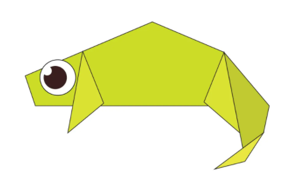

Origami Designs
About us
Follow us
These are origami steps
Interesting facts about Panda
- A giant panda is much bigger than your teddy bear.
- An adult can eat 12–38 kilos of bamboo per day!
- Pandas have carnivorous teeth, but they eat bamboo and fruit.
- Pandas have 6 toes to grasp bamboo.
- Newborn pandas are pink!
Interesting facts about Teddy Bear
- The first toy stuffed bear was created by German toymaker Margarete Steiff.
- The world's smallest stitched teddy bear is a mere 0.29 inches tall!
- The world's largest stitched teddy bear is a mere 55 foot tall!
- Winnie the Pooh was based on a real bear

Interesting facts about Chameleon
- Chameleons take a while to hatch, and don’t live very long
- Chameleons come in a lot of different shapes and sizes
- Chameleons have extremely powerful tongues
- Chameleons are not deaf but they do not actually have ear openings.
- Species of chameleon can be as small as 15 mm (0.59 in) or as large as 69 cm (27 in).